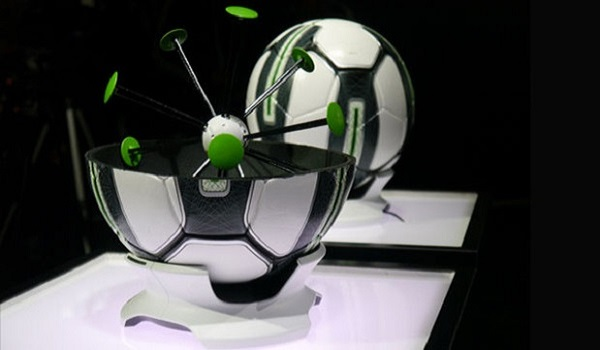
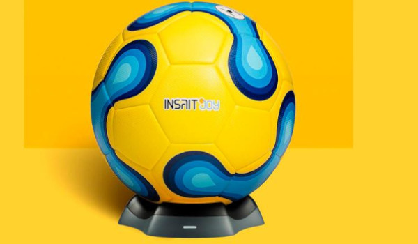
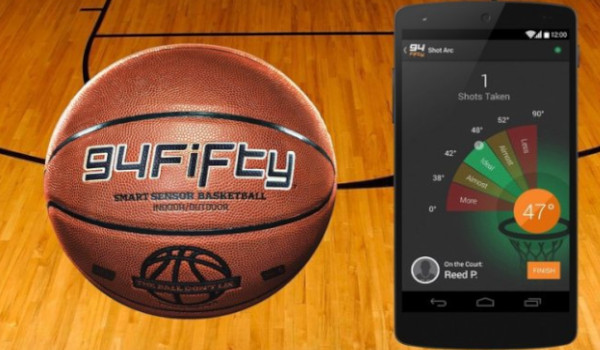
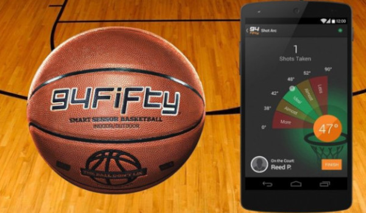

«Умный» мяч рассчитан, как на профессиональных футболистов, так и на любителей погонять в мяч, желающих усовершенствовать свою игру. Конструкция умного мяча практически идентична профессиональным футбольным мячам – натуральная каучуковая внутренняя камера, многослойный комбинированный наполнитель из синтетического пеноматериала и текстильного слоя. Внутри мяча несколько датчиков, каждый из которых соединен пружиной с центром управления.
Главная цель умного мяча научить футболиста играть лучше, совершенствовать технику ударов, выявить ошибки. Группа датчиков, скрытая в недрах смарт-мяча отслеживают силу удара, траекторию движения, скорость и направление вращения мяча. Сопряжение умного мяча с мобильным устройством происходит в автоматическом режиме. Во время первого «знакомства» умный мяч и мобильное устройство с приложением для смартфона находят друг друга, идентифицируют и запоминают. В дальнейшем смартфон распознает смарт-мяч, как только тот оказывается в зоне действия сигнала Bluetooth.
Программисты разработали несколько версий режимов тренировок, рассчитанных на различный уровень профессиональной подготовки, внешние условия, количество игроков. Интерактивное приложение позволяет не только совершенствовать игровую технику, но и делиться успехами с друзьями в интернете. Программа имеет несколько уровней навыков. Информация о телодвижениях игрока визуализируется в виде наглядных графических схем, с детальной траекторией движения мяча, фактическими и расчетными точками удара. Приложение содержит сборник видео уроков, просматривать которые можно в замедленном темпе с комментариями футбольных тренеров. Обзор профессиональных секретов и футбольных нюансов включает множество полезной информации и упражнений, выполнять которые можно самостоятельно в качестве разминки.
«Мозги» умного мяча работают от перезаряжаемой аккумуляторной батареи. Заряжается устройство с помощью настольной зарядной станции, работающей от бытовой электросети. Док-станция выполнена в виде полусферы, в которую, как в колыбель, кладется умный мяч. Чтобы зарядить смарт-мяч нужно включить док-станцию в розетку и установить мяч зарядными маркерами вниз. Маркеры помечают беспроводную точку зарядного контакта. Процесс зарядки сопровождается миганием зеленых светодиодов. Полная зарядка занимает около часа времени.
Объем и вес смарт-мяча соответствуют размеру 5
Модуль со встроенным датчиком состоит из 32 панелей с качественной термообработкой швов
-
В игре и при ударах «умный мяч» реагирует так же, как обычный мяч
Встроенный датчик внутри мяча определяет скорость, вращение мяча, параметры удара и полета мяча. С помощью Bluetooth 4.0 данные мгновенно передаются на приложение, установленное на мобильном устройстве.
«Умный» мяч - ваш персональный тренер. Он дает советы по отработке техники ударов, силы и мощности, для совершенствования точности передач, изгибов и наклболов. Совершенствуйте свои навыки и способности. Мяч записывает видео с вашими ударами, что помогает вам совершенствовать свою технику Большая коллекция видеороликов с ударами профессионалов - по различным видам техники ударов.
 
 
